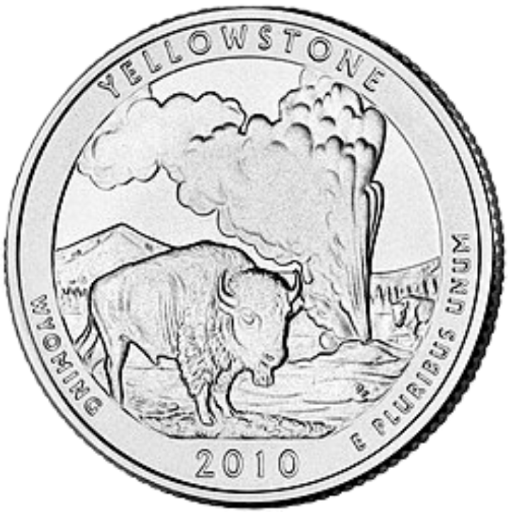
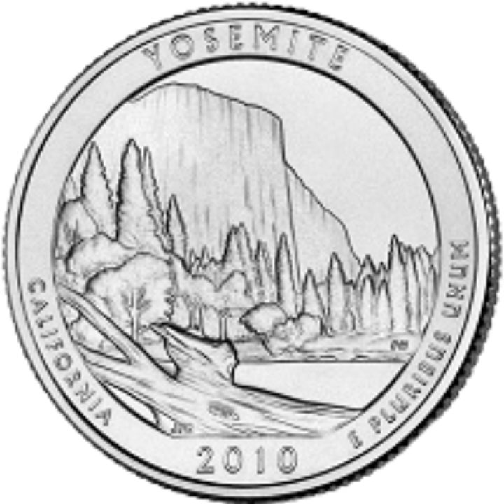
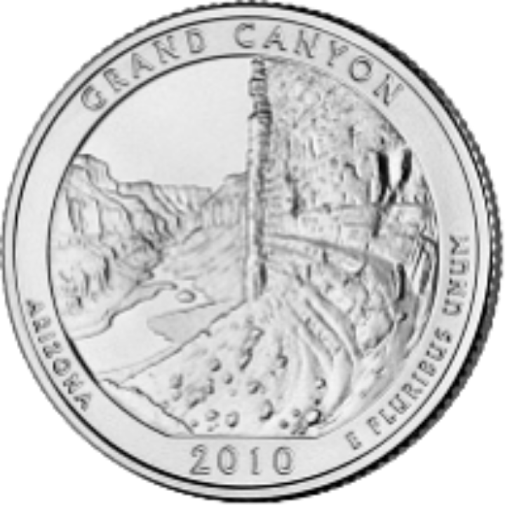
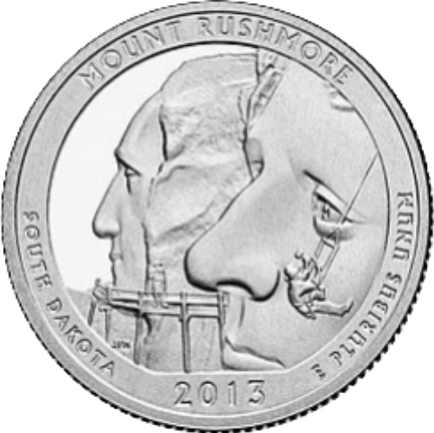
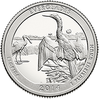
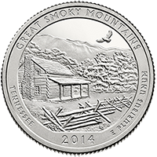
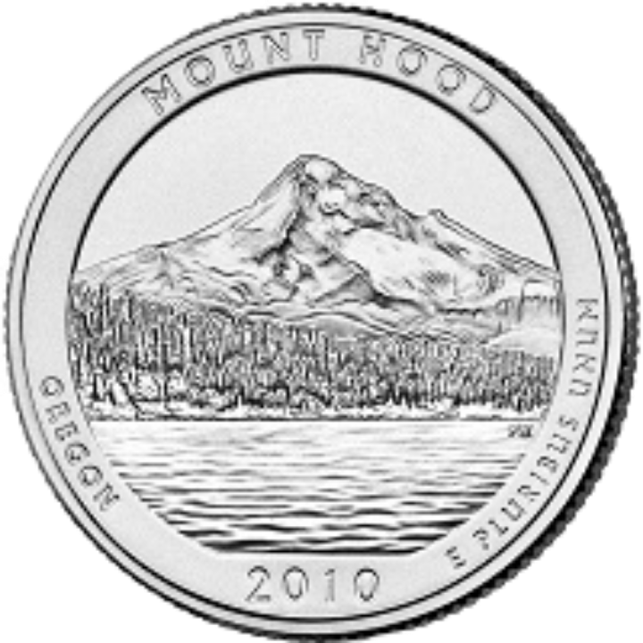
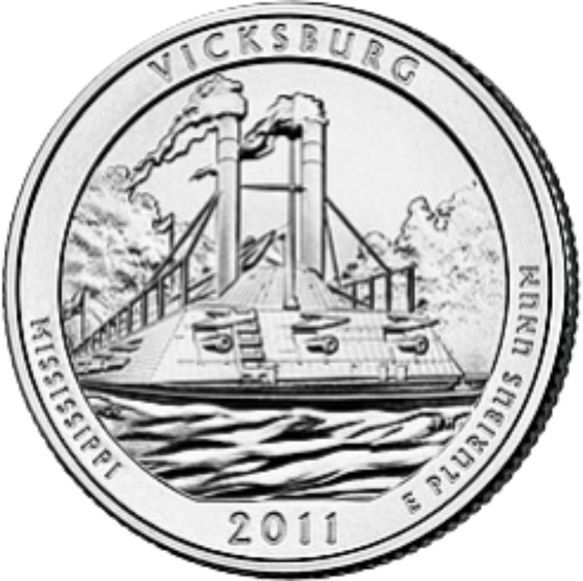
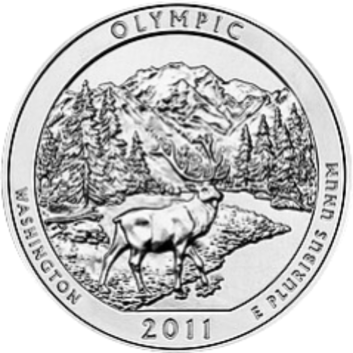

Выпуск: 2010 год. Посвящена первому национальному парку США.

Выпуск: 2010 год. Изображает знаменитую скалу El Capitan.

Выпуск: 2010 год. Один из символов американской природы.

Выпуск: 2013 год. Знаменитый мемориал президентов США.

Выпуск: 2014 год. Известен уникальной экосистемой Флориды.

Выпуск: 2014 год. Один из самых посещаемых парков США.

Выпуск: 2010 год. Монета посвящена живописаному национальному лесу.

Выпуск: 2011 год. Дизайн напоминает национальный военный парк Виксберг, посвященный гражданской войне.

Выпуск: 2011 год. Самый живописный горно-лесной парк.